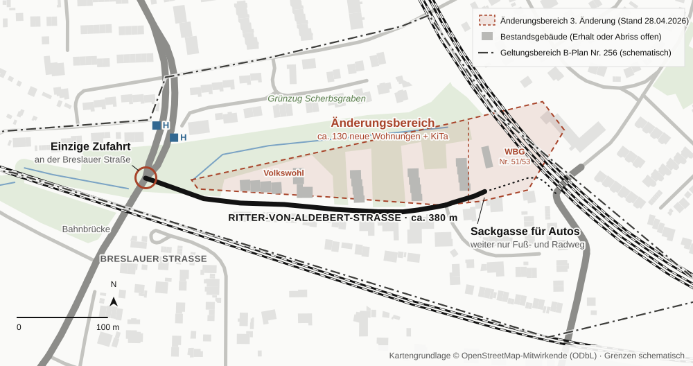

130 Wohnungen, eine Zufahrt
An der Ritter-von-Aldebert-Straße soll ein neues Wohnquartier entstehen. Über den Verkehr steht in den Plänen bisher kaum etwas. Sieben Forderungen und wie Sie sich jetzt bei der Stadt melden können.
Wer heute in die Ritter-von-Aldebert-Straße einbiegt, kennt das Bild: links und rechts parkende Autos, dazwischen eine Fahrspur. Kommt einem jemand entgegen, muss einer zurücksetzen. Am Ende der Straße geht es für Autos nicht weiter, sie endet in einem Geh- und Radweg. Alles, was hinein will, kommt über eine einzige Einmündung an der Breslauer Straße, direkt an der Bahnbrücke, zwischen der Einmündung der Cadolzburger Straße und zwei Bushaltestellen.
Eine Straße, ein Ausgang
Lage des Planungsgebiets zwischen Ritter-von-Aldebert-Straße und Grünzug Scherbsgraben

In diese Straße sollen nach den bisher vorliegenden Entwürfen rund 130 neue Wohnungen und eine Kindertagesstätte kommen. Der Fürther Stadtrat hat dafür am 6. Juli 2026 mit 45 zu 1 Stimmen beschlossen, den Bebauungsplan Nr. 256 zu ändern. Bauherren sind die Genossenschaft Volkswohl und die städtische WBG Fürth.
Was geplant ist
Die Unterlagen sind öffentlich. Sie hängen an der Beschlussvorlage SpA/1335/2026 im Ratsinformationssystem der Stadt. Die Machbarkeitsstudie der Volkswohl vom August 2025 zeigt mehrere neue Mehrfamilienhäuser zwischen der Straße und dem Grünzug am Scherbsgraben. Sie nennt außerdem 145 neue Stellplätze, teils in Tiefgaragen. Ein zweiter Entwurf der WBG vom Mai 2026 zeigt zwei weitere Häuser an der Hausnummer 51/53 mit 29 Stellplätzen.
Wir sagen ausdrücklich: Fürth braucht Wohnungen, gerade bezahlbare. Die Pläne enthalten gute Ideen, etwa Gründächer, eine KiTa und Wohnungen für Familien und Ältere. Gerade deshalb muss die Frage geklärt werden, wie all die neuen Bewohnerinnen und Bewohner, Lieferdienste, Müllfahrzeuge und Rettungswagen eigentlich in die Straße hinein- und wieder herauskommen.
Faktisch einspurig
Querschnitt der Ritter-von-Aldebert-Straße bei Parken auf beiden Seiten (schematisch)
Das Verkehrsproblem in Zahlen
Ein Verkehrsgutachten liegt den Unterlagen nicht bei. In Verkehrsgutachten für Wohngebiete werden üblicherweise 2,3 bis 2,5 Autofahrten pro Einwohner und Tag angesetzt. Überschlägig ergeben sich damit für 130 Wohnungen etwa 600 bis 1.100 zusätzliche Autofahrten pro Tag, alle über dieselbe Einmündung. Hinzu kommen der Bring- und Holverkehr der KiTa und über Jahre der Baustellenverkehr mit Abriss, Tiefgaragen und Kranen. Das ist unsere eigene Abschätzung. Genau deshalb fordern wir, dass ein Gutachten die Zahlen sauber ermittelt.
Was dazukommt
Eckdaten der vorliegenden Entwürfe für Volkswohl und WBG
Zur Ehrlichkeit gehört auch: Laut amtlichem Unfallatlas gab es an der Einmündung in den Jahren 2022 bis 2024 keinen Unfall mit Verletzten. Es geht uns also nicht um eine Unfallstelle. Es geht darum, ob eine schon heute enge Straße und eine unübersichtliche Einmündung den zusätzlichen Verkehr aufnehmen können, ohne dass Busse warten, Rettungswagen steckenbleiben und der Parkdruck in die Nachbarstraßen ausweicht.
Ein Detail verschärft das: Nach der neuen Fürther Stellplatzsatzung von 2025 muss für geförderte Wohnungen nur ein Stellplatz je zwei Wohnungen gebaut werden. Autos haben die Bewohnerinnen und Bewohner trotzdem. Was nicht in die Tiefgarage passt, steht am Ende auf der Straße.
Warum gerade jetzt der richtige Zeitpunkt ist
Die Stadt will das Vorhaben möglichst über den sogenannten „Wohnungsbau-Turbo“ zulassen, eine neue Sonderregel im Baugesetzbuch. Zeigen sich bei der Beteiligung von Behörden und Öffentlichkeit keine wesentlichen Konflikte, stimmt der Stadtrat dem Bau direkt zu. Ein fertiger Bebauungsplan mit förmlicher Offenlage wäre dann gar nicht mehr nötig.
Wo das Verfahren gerade steht
Ablauf nach den Fürther Leitlinien zum „Wohnungsbau-Turbo“ (Anwendungsfall 2)
- 6. Juli 2026Stadtrat beschließt die Änderung des Bebauungsplans Nr. 256 (45:1 Stimmen)
- als Nächstes · Termin offenFrühzeitige BeteiligungJETZT MELDEN
Öffentlichkeit und Behörden können sich äußern (§ 3 Abs. 1 BauGB) - danachDie Stadt entscheidet über den weiteren Weg
Weg A · „Turbo“
Wenig Konflikte → Vertrag mit den Bauherren → Zustimmung des Stadtrats (§ 36a BauGB) → Bauantrag
Weitere Beteiligung nur freiwillig, kein Bebauungsplan
Weg B · reguläres Verfahren
Konflikte ungelöst → Gutachten → Entwurf öffentlich, mindestens 30 Tage → Abwägung → Satzung
Zweite Beteiligungsrunde, gerichtlich überprüfbar
Das heißt: Die jetzt anstehende frühzeitige Beteiligung ist möglicherweise die einzige Gelegenheit, Einwände formell einzubringen. Je mehr sachliche Stellungnahmen zum Verkehr eingehen, desto schwerer lässt sich behaupten, es gebe keine Konflikte.
Wichtig ist auch: Auch beim „Turbo“ muss die Erschließung gesichert sein, also auch die Zufahrt. So steht es im FAQ des Bayerischen Bauministeriums, das die Stadt selbst ihren Unterlagen beigelegt hat. Dasselbe Papier erlaubt der Stadt, die Zahl der Wohnungen im Vertrag mit den Bauherren an die „Erschließungskapazität“ zu koppeln und den Ausbau der Straße per Erschließungsvertrag zu regeln. Nötige Maßnahmen, etwa eine Ampel an der Breslauer Straße, müssen also nicht aus dem städtischen Haushalt bezahlt werden.
Unsere sieben Forderungen
- Verkehrsgutachten vor jeder Entscheidung. Mit Zählung des heutigen Verkehrs, Prognose inklusive KiTa und einem Nachweis, dass die Einmündung in die Breslauer Straße den Zusatzverkehr bewältigt, unter Berücksichtigung von Bahnbrücke, Bushaltestellen und Cadolzburger Straße. Das Gutachten muss öffentlich sein.
- Begegnungsverkehr und Wendeanlage prüfen. Wie breit ist die Fahrbahn neben parkenden Autos? Wo wenden Müllfahrzeuge und Rettungsdienst? Die Feuerwehrzufahrt muss gesichert sein.
- Ein Parkraumkonzept, das mit dem realen Bedarf rechnet. Es darf kein zusätzlicher Parkdruck auf der Straße entstehen. Für Parkplätze, die durch neue Zufahrten wegfallen, muss es Ersatz geben.
- Ein Baustellenkonzept. Zufahrt, Zeiten, Schwertransporte und Kranstandorte festlegen. Anwohnerinnen, Anwohner und Rettungsdienst müssen während der gesamten Bauzeit durchkommen.
- Die Kosten tragen die Bauherren. Knotenumbau oder Ampel, Straßenausbau und Wendeanlage werden über einen Erschließungs- bzw. städtebaulichen Vertrag von Volkswohl und WBG getragen, nicht von der Allgemeinheit.
- So viele Wohnungen, wie die Straße verträgt. Die Zahl der Wohnungen bzw. der Bauabschnitte wird im Vertrag an der nachgewiesenen Erschließungskapazität ausgerichtet.
- Im Zweifel ein reguläres Verfahren. Lassen sich diese Fragen nicht vor der Zustimmung klären, soll die Stadt das reguläre Bebauungsplanverfahren mit förmlicher Offenlage durchführen, so wie es ihre eigenen Leitlinien für Konfliktfälle vorsehen. Vor jeder Zustimmung soll die Öffentlichkeit zudem erneut beteiligt werden, was § 36a Absatz 2 BauGB ausdrücklich erlaubt.
Melden Sie sich bei der Stadt
Jede Stellungnahme zählt, und sie muss nicht juristisch formuliert sein. Wichtig sind drei Dinge: das Aktenzeichen bzw. der Name des Verfahrens, Ihre eigene Beobachtung und die Forderungen. Besonders wirksam sind konkrete Belege: die gemessene Restbreite der Fahrbahn, ein Foto vom Rückstau an der Einmündung, eine Notiz, wann das Müllauto zurücksetzen musste.
So geht’s
Per E-Mail an: spa@fuerth.de (Stadtplanungsamt der Stadt Fürth)
Oder per Post an: Stadt Fürth, Stadtplanungsamt, Technisches Rathaus, Hirschenstraße 2, 90762 Fürth (Postanschrift: Postfach, 90744 Fürth)
Betreff: Bebauungsplan Nr. 256, 3. Änderung „Ritter-von-Aldebert-Straße“ – Stellungnahme zu Verkehr und Erschließung
Wann: Jetzt. Die Stadt hat die frühzeitige Beteiligung beschlossen, einen Termin aber noch nicht bekannt gemacht. Wer sich schon jetzt meldet, zeigt, dass Klärungsbedarf besteht. Sobald die Beteiligung offiziell läuft, bitte die Stellungnahme dort noch einmal förmlich einreichen.
Zusätzlich: Schicken Sie eine Kopie an die Fraktionen im Stadtrat, damit das Thema im Bau- und Werkausschuss und im Verkehrsausschuss ankommt.
Ein Textvorschlag zum Übernehmen
Sehr geehrte Damen und Herren,
zum Bebauungsplan Nr. 256, 3. Änderung „Ritter-von-Aldebert-Straße“ (Beschlussvorlage SpA/1335/2026) möchte ich mich zum Thema Verkehr und Erschließung äußern. Die Ritter-von-Aldebert-Straße ist eine Sackgasse mit einer einzigen Zufahrt über die Breslauer Straße und durch Parken am Fahrbahnrand faktisch einspurig. [Eigene Beobachtung, z. B. gemessene Restbreite, Datum, Foto.] Den Unterlagen liegt kein Verkehrsgutachten bei.
Auch bei Anwendung des § 246e BauGB muss die Erschließung im Wesentlichen gesichert sein (FAQ des Bayerischen Bauministeriums zum Bau-Turbo, Abschnitt VII.1). Ich bitte deshalb darum, vor einer Entscheidung nach § 36a BauGB
1. ein öffentliches Verkehrsgutachten mit Leistungsnachweis für die Einmündung Breslauer Straße einzuholen, 2. Begegnungsverkehr, Wendeanlage und Feuerwehrzufahrt zu prüfen, 3. ein Parkraumkonzept und 4. ein Baustellenkonzept vorzulegen, 5. nötige Maßnahmen wie Knotenumbau oder Ampel per Vertrag den Vorhabenträgern aufzuerlegen, 6. die Zahl der Wohnungen an der Erschließungskapazität auszurichten und 7. andernfalls das reguläre Bebauungsplanverfahren durchzuführen sowie die Öffentlichkeit vor einer Zustimmung nach § 36a Abs. 2 BauGB erneut zu beteiligen.
Bitte bestätigen Sie den Eingang und informieren Sie mich über den Termin der frühzeitigen Öffentlichkeitsbeteiligung.
Mit freundlichen Grüßen
[Name, Anschrift]
Quellen und Unterlagen
- Beschlussvorlage SpA/1335/2026 mit allen Plänen (Ratsinformationssystem der Stadt Fürth)
- Niederschrift der Stadtratssitzung vom 6. Juli 2026
- Anfangsleitlinien der Stadt zum „Wohnungsbau-Turbo“ (SpA/1327/2026)
- FAQ des Bayerischen Bauministeriums zum Bau-Turbo, Stand 2. April 2026 (Anlage einer Vorlage der Stadt)
- Stellplatzsatzung der Stadt Fürth 2025
- § 36a Baugesetzbuch · § 3 Baugesetzbuch
- Unfallatlas der Statistischen Ämter (Unfälle mit Personenschaden, 2022–2024)